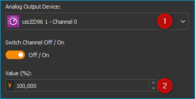

14. LED Array Plugin
14.1. Einführung

Durch Drücken der Schaltfläche LED Array in der Seitenleiste oder den Menüpunkt können Sie zum View des LED Array Plugins wechseln (siehe Abbildung unten).

Der Arbeitsbereich enthält für jedes angeschlossene LED-Array ein eigenes Bedienpanel:
14.2. Hardware Version
Für jedes LED Array wird je nach Version der LED Array Hardware ein entsprechendes LED Array Bedienpanel eingeblendet. Die folgenden beiden Hardwareversionen werden unterstützt:
LED Array Hardware V1 |
LED Array Hardware V2 |
|---|---|
|
|
Die Hardware Version 1 unterstützt 12 unabhängige LED Array Kanäle mit einer Auflösung von 100 Schritten zur Einstellung der Helligkeit. |
Hardware Version 2 unterstützt eine virtuell unbegrenzte Anzahl von unabhängigen LED Kanälen mit einer Auflösung von 4096 Schritten zur Einstellung der Helligkeit. |


14.3. LED Array V1 - Bedienpanel

Beschriftung (anpassbar)
alle LED-Kanäle ein/aus
die Helligkeit der einzelnen LED-Kanäle einstellen (0 - 100%)
Einstellung der Helligkeit mehrerer LED-Kanäle (LED-Gruppe) gleichzeitig
Die Beschriftung des LED-Arrays kann von Ihnen jederzeit geändert werden. Klicken Sie zum Ändern der Beschriftung einfach auf die Beschriftung ❶ und geben Sie dann einen neuen Namen für das LED-Array ein. Dieser Name wird gespeichert und bei einem späteren Start der Software wieder geladen.
14.4. Helligkeit einzelner LED-Kanäle einstellen
Die Helligkeit jedes einzelnen LED-Kanals können Sie einstellen, indem Sie den Wert direkt in das Feld unter der LED eintragen ❷ (0 – 100%) oder indem Sie mit der rechten Maustaste auf eine LED klicken und die Helligkeit dann mit dem Schieberegler ❶ verändern (siehe Abbildung unten).

Um einzelne LED-Kanäle ein- und auszuschalten, klicken Sie mit der linken Maustaste auf eine LED.

Da alle LED-Kanäle in der Software analoge Ausgangskanäle sind, können Sie die Helligkeit einzelner LED-Kanäle auch über das Fenster der I/O-Kanäle ändern (siehe Abbildung unten).

14.5. LED-Kanalgruppen
14.5.1. Einführung
Wenn mehrere LED-Kanäle synchron arbeiten sollen, können Sie diese Kanäle zu Gruppen zusammenfassen und gemeinsam steuern. Das Bedienpanel enthält 3 Schieberegler zur Einstellung der Helligkeit für drei verschiedene LED-Kanalgruppen.
14.5.2. LED-Kanalgruppe konfigurieren
Zur Auswahl der Kanäle, die in einer Gruppe zusammengefasst werden sollen, klicken Sie mit der rechten Maustaste in den Bedienbereich einer Gruppe und wählen Sie im Kontextmenü den Punkt (siehe Abbildung unten).

In dem Konfigurationsfenster das nun eingeblendet wird, können Sie alle LED-Kanäle auswählen, die in einer Gruppe zusammengefasst werden sollen. Setzen Sie ein Häkchen für jeden Kanal, der Teil dieser Gruppe sein soll ❶ und bestätigen Sie die Auswahl durch Klick auf OK ❷.

14.5.3. LED-Kanalgruppe steuern
Sie können die Helligkeit einer LED-Gruppe mit dem Schieberegler ❶ verändern oder durch direkte Eingabe des Helligkeitswertes in das Eingabefeld ❷ (Abbildung unten).

Über das Häkchen in der linken oberen Ecke ❸ können Sie alle LEDs der Gruppe gemeinsam ein- und ausschalten.
14.6. Standby-Timer konfigurieren
Das LED Array verfügt über eine Standby-Timer Funktionalität. D.h. nach der letzten Aktion des Anwenders in der Software und nach Ablauf der Standby-Zeit werden automatisch alle Sektoren des LED-Arrays abgeschaltet. Jede Veränderung von Parametern in der Software, setzt den Standby-Timer zurück und aktiviert das Array wieder.
Wichtig
Der Standby-Timer Wert wird im LED Array gespeichert. D.h. auch wenn die Verbindung zum PC unterbrochen wurde, wird das LED Array nach Ablauf der Standby-Zeit abgeschaltet.
Um die Standby-Zeit zu konfigurieren, klicken Sie mit der rechten Maustaste auf eine freie Fläche im Bedienpanel des LED-Arrays um das Kontextmenü anzuzeigen. Wählen Sie dann den Menüpunkt .

In dem Konfigurationsdialog der Ihnen nun angezeigt wird können Sie die Stunden, Minuten und Sekunden des Standby-Timers konfigurieren. Durch Anklicken der Schaltfläche OK werden Ihre Änderungen übernommen und die Standby-Zeit im Gerät gespeichert (Abbildung unten).

Wichtig
Um den Standby-Timer zu desaktivieren konfigurieren Sie die Stunden, Minuten und Sekunden mit dem Wert 0.
14.7. LED Array V2 - Bedienpanel

Die Beschriftung des LED-Arrays kann von Ihnen jederzeit geändert werden. Klicken Sie zum Ändern der Beschriftung einfach auf die Beschriftung ❶ und geben Sie dann einen neuen Namen für das LED-Array ein. Dieser Name wird gespeichert und bei einem späteren Start der Software wieder geladen.
14.8. Globale Helligkeit einstellen
Die globale Helligkeit aller LED Kanäle gleichzeitig können Sie über den Schieberegler ❷ oder über das Eingabefeld im Bereich Global Brightness einstellen. Mit dem Ankreuzfeld in der linken oberen Ecke ❶ schalten Sie das globale Enable Signal des LED Arrays. Damit können Sie das Array ein- / und ausschalten, ohne die Helligkeitswerte der einzelnen Kanäle zu verändern.

Wichtig
Nur wenn das Enable Signal aktiviert ist, leuchten die LEDs des Arrays.
14.9. Helligkeit von LED Bänken einstellen
LED Bänke sind eine geräte- und hardwarespezifische Gruppierung von einzelnen LED Kanälen in Gruppen. LED Bänke gruppieren LED Kanäle, die auch physisch in der Hardware eine Gruppe bilden, z.B. alle LEDs auf einer Platine oder alle LEDs eines bestimmten Typs (z.B. warmweiß oder kaltweiß). Diese Gruppen sind in der Firmware verankert und können vom Anwender nicht geändert werden.

Um die Helligkeit einer Bank zu ändern wählen Sie im Eingabefeld Bank ❶ die Bank aus, und stellen Sie dann mit dem Schieberegler oder dem Eingabefeld ❷ die Helligkeit der gewählten Bank ein.
14.10. Helligkeit einzelner LED-Kanäle einstellen
Im Bereich LED Channel Brightness stellen Sie die Helligkeit einzelner LED Kanäle ein. Wählen Sie den Kanal im Eingabefeld Channel ❶. Die Helligkeit ändern Sie über das Eingabefeld ❷ oder den Schieberegler.

Um einen Kanal ein- und auszuschalten, klicken Sie mit der linken Maustaste auf die LED ❸.
Da alle LED-Kanäle in der Software analoge Ausgangskanäle sind, können Sie die Helligkeit einzelner LED-Kanäle auch über das Fenster der I/O-Kanäle ändern (siehe Abbildung unten).
14.11. LED Kanalgruppen
14.11.1. Einführung
Wenn mehrere LED-Kanäle synchron arbeiten sollen, können Sie diese Kanäle zu Gruppen zusammenfassen und gemeinsam steuern. Über die Gruppenkanäle können Sie dann alle Kanäle einer LED Gruppe gemeinsam steuern
14.11.2. LED Kanalgruppen konfigurieren
Um LED Kanalgruppen zu konfigurieren, klicken Sie mit der rechten Maustaste in den Bereich LED Group Brightness und wählen Sie dann aus dem Kontextmenü den Menüpunkt .

Es wird Ihnen nun der Konfigurationsdialog zur Konfiguration der LED Gruppen angezeigt (Abbildung unten).

Um LED Kanäle einer Gruppen hinzuzufügen, gehen Sie wie folgt vor:
Wählen Sie zuerst mit der Gruppen-Auswahlbox ❷ die Gruppe aus, die Sie konfigurieren möchten.
Wählen Sie nun in der Kanalliste ❶ die Kanäle, die Sie zur Gruppe hinzufügen möchten durch Klicken mit der Maustaste aus.
einzelne Kanäle wählen Sie durch Anklicken aus
mehrere zusammenhängende Kanäle wählen Sie aus, indem Sie den ersten Kanal mit der Maus anklicken und dann die Shift-Taste gedrückt halten, während Sie den letzten Kanal anklicken

mehrere unabhängige Kanäle wählen Sie aus, indem Sie beim Anklicken die Steuerungstaste gedrückt halten.

Fügen Sie nun die ausgewählten Kanäle durch Anklicken der Plus-Schaltfläche zur Gruppe hinzu ❸. Um einzelne Kanäle aus der Gruppe zu löschen, wählen Sie die Kanäle in der Gruppenliste aus und klicken Sie anschließend die Minus-Schaltfläche ❹. Um alle Kanäle aus der Gruppe zu löschen, klicken Sie die Schaltfläche Clear LED Group ❺ an.
Wenn Sie alle Gruppen konfiguriert haben, klicken Sie OK ❻. Die Gruppenkonfiguration wird nun zum Gerät übertragen. Wenn Sie die Gruppenkonfiguration dauerhaft im Gerät speichern möchten, klicken Sie im angezeigten Meldungsfenster (siehe Abbildung unten) auf Yes.

14.11.3. Helligkeit von LED Gruppen einstellen
Um die Helligkeit einer Gruppe zu ändern, wählen Sie im Eingabefeld Group ❶ die Gruppe aus, und stellen Sie dann mit dem Schieberegler oder dem Eingabefeld ❷ die Helligkeit der gewählten Gruppe ein.

14.12. Script Funktionen
Das LED-Array-Plugin bietet eine Reihe von Scriptfunktionen die für die Programmierung von automatischen Belichtungssequenzen oder für die zeitgesteuerte Belichtung verwendet werden können. Die Scriptfunktionen finden Sie in den Kategorien LED Array Functions und I/O Functions.


14.12.1. Funktion Globale Helligkeit – Set Global LED Array Brightness

Mit dieser Scriptfunktion stellen Sie die globale Helligkeit aller LED Kanäle eines LED Arrays gemeinsam ein. Zur Konfiguration der Skriptfunktion gehen Sie wie folgt vor (Abbildung unten):

Wählen Sie dazu das LED-Gerät aus der Geräteliste aus
Stellen Sie anschließend die Helligkeit (0 – 100%) ein.
Tipp
Diese Funktion unterstützt Scriptvariablen. Im Feld Brightness können Variablen verwendet werden.
14.12.2. Funktion Bank-Helligkeit – Set LED Bank Brightness

Die Helligkeit kompletter LED Bänke können Sie mit dieser Scriptfunktion einstellen. Zur Konfiguration der Skriptfunktion gehen Sie wie folgt vor (Abbildung unten):

Wählen Sie das LED-Array Gerät aus
Wählen Sie die Bank aus, deren Helligkeit geändert werden soll
Stellen Sie die Helligkeit ein (0- - 100%)
Tipp
Diese Funktion unterstützt Scriptvariablen. Im Feld Bank und Brightness können Variablen verwendet werden.
14.12.3. Funktion LED Helligkeit – Set LED Channel Brightness

Für einzelne LED Kanäle können Sie die Helligkeit mit dieser Scriptfunktion einstellen. Zur Konfiguration der Scriptfunktion gehen Sie wie folgt vor (Abbildung unten):

Wählen Sie das LED-Array Gerät aus
Wählen Sie den Kanal aus, dessen Helligkeit Sie einstellen möchten
Stellen Sie die Helligkeit ein (0- - 100%)
Tipp
Diese Funktion unterstützt Scriptvariablen. Im Feld Channel und Brightness können Variablen verwendet werden.
14.12.4. Funktion Gruppen-Helligkeit – Set LED Group Brightness

Mit dieser Funktion können Sie die Helligkeit einer LED Gruppe scriptgesteuert einstellen. Zur Konfiguration der Scriptfunktion gehen Sie wie folgt vor (Abbildung unten):

Wählen Sie das LED-Array Gerät aus
Wählen Sie die Gruppe aus, deren Helligkeit Sie einstellen möchten
Stellen Sie die Helligkeit ein (0- - 100%)
Tipp
Diese Funktion unterstützt Scriptvariablen. Im Feld Group und Brightness können Variablen verwendet werden.
14.12.5. Funktion Multi-Kanal Helligkeit – Set Multi Channel Brightness

Mit dieser Funktion können Sie scriptgesteuert die Helligkeit mehrere LED-Kanäle gleichzeitig einstellen.Zur Konfiguration der Skriptfunktion gehen Sie wie folgt vor (Abbildung unten):

Wählen Sie das LED-Array Gerät aus
Stellen Sie die Helligkeit ein (0- - 100%)
Setzen Sie für jeden Kanal der geregelt werden soll ein Häkchen in der Kanalauswahlliste.
Wichtig
Sind sehr viele Kanäle ausgewählt, kann die Datenübertragung für alle Kanäle eine gewisse Zeit dauern, so dass nicht alle Kanäle genau synchron geschaltet werden. Verwenden Sie ggf. LED Gruppen, wenn diese Verzögerung nicht erwünscht ist.
Tipp
Diese Funktion unterstützt Scriptvariablen. Im Feld Brightness können Variablen verwendet werden.
14.12.6. Funktion Analogausgang setzen - Set Analog Out

Alle LED Kanäle sind in der Software normale analoge Ausgangskanäle. Sie können deshalb für das Einstellen der Helligkeit einzelner Kanäle die Funktion Set Analog Out aus der Kategorie I/O Script-Funktionen verwenden.
Wählen Sie im Konfigurationsbereich Analog Output den entsprechenden LED-Kanal aus ❶ und tragen Sie im Feld Value den Helligkeitswert ❷ (0 – 100%) ein.
Tipp
Diese Funktion unterstützt die Verwendung von Variablen. D.h., im Feld Value ❷ können Sie, statt eines Wertes, den Namen einer Variablen eintragen, die den Helligkeitswert zur Laufzeit des Scripts enthält (siehe Abbildung).